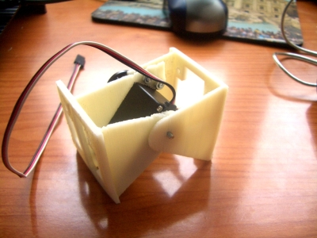
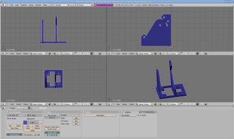

Os presento a los módulos REPY-1. Son los primeros módulos “imprimibles” con los que se pueden construir fácilmente robots modulares.
Son muy similares a los módulos Y1 que desarrollé en mi tesis doctoral. Pero los REPY-1 son mucho más fáciles de construir. El nombre viene de la abreviación de REPRAP + Y1.
Están diseñados con el programa Blender. En esta foto podéis el cuerpo del módulo. Está compuesto sólo por dos piezas: la cabeza y el cuerpo.
Cada pieza tarda aproximadamente 45 minutos, por lo que en 1 hora y media ya tendremos las dos piezas impresas y podremos construir el módulo.
En este vídeo se puede ver a nuestra Cupcake imprimiendo el cuerpo de un módulo REPY-1:

El montaje del módulo es muy fácil. Podéis ver todo el proceso desde que se imprime hasta que se construye el módulo en este álbum de fotos.
En este vídeo podéis ver un módulo en acción. El acabado de los módulos es tosco, comparado con los módulos Y1 que están cortados por láser, sin embargo son totalmente funcionales. La versión 1.0 tiene algunos problemas de diseño y la impresión no es muy buena. Por ejemplo, una de las partes de la cabeza es demasiado fina y se rompe. Pero a pesar de los fallos, los módulos son 100% usables.

El material en el que está impreso es ABS (Acrilonitrilo Butadieno Estireno). Es el mismo material del que están hechos los módulos de Lego.
Al hacer las pruebas me imprimí 2 módulos. Y con ellos construí la configuración mínima PP (Minicube-I). Aquí la podéis ver en funcionamiento:

Lo interesante de esta tecnología de impresión 3D casera es que cualquiera puede bajarse los objetos 3D de la web e imprimírselos en casa. Es lo más parecido que hay a la Teletransportación 🙂 Si vemos el mapa de las máquinas reprap por el mundo, cualquier de ellos puede materializar los módulos REPY-1 en poco tiempo. Así, el gusano que habéis visto en el vídeo anterior se puede duplicar y teletransportar a cualquiera de esas máquinas 🙂 ¿Interesante verdad?
Para su mayor difusión, he subido los módulos a Thingiverse, un repositorio de objetos 3D donde todos los que tenemos estas impresoras compartimos nuestros diseños e imprimimos los de los demás.
La gente de Makerbot Industries se han emocionado con estos robots modulares “imprimibles” y han publicado una entrada en su blog 🙂
Holas gente,
estoy siguiendo con interés vuestro proyectos.
Lo de la Reprap tiene muy buena pinta pero el producto final lo veo un poco basto. Definitivamente, creo que su gran utilidad es el prototipado o para la producción de kits experimentales en cortas series.
Enhorabuena pro vuestras iniciativas. No dejeis de alimentarnos con grandes ideas.